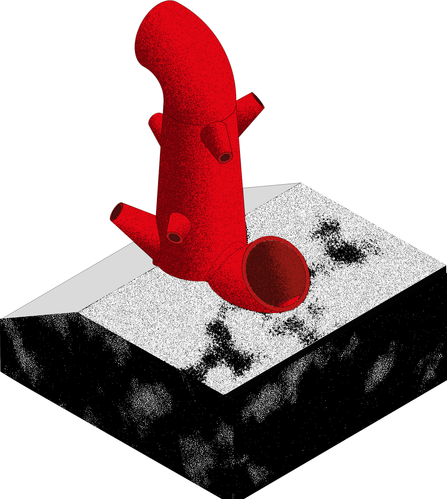

El proyecto plantea un punto de observación en El Prat de Llobregat, entendido como un territorio híbrido donde conviven, sin jerarquías claras, fauna, vegetación, industria e infraestructuras. La propuesta asume esa condición de fricción y superposición como material de proyecto y concibe la arquitectura como un dispositivo de lectura: una pieza que orienta la mirada y convierte la complejidad del lugar en experiencia espacial.
El observatorio se estructura en torno a una escalera central de hierro contenida por una cáscara de hormigón. A lo largo del ascenso, una serie de catalejos encuadran vistas parciales del entorno hasta culminar en un mirador panorámico. Su altura se define para emerger por encima de las cañas, mientras que el acceso subterráneo actúa como umbral sensorial. El conjunto, del color de la vegetación, busca disolverse en el ecosistema y operar como un habitante más del paisaje.
